← ishizakahiroshi.github.io
体験談
2026-07-14
「工事後に自動で解約されます」と言われたのに、IPoE が残って乗り換え先の v6 プラスが始まらなかった話
BIGLOBE から他社への事業者変更。工事前日にオペレーターから「事業者変更完了後にIPv6オプションは自動で解約される」「BIGLOBEにご登録が残存することはございません」と断定されました。しかし工事後、旧IPoEは残ったまま。移転先のv6プラスは「申込中」から動かず、通信経路は依然として BIGLOBE 経由。3日間で電話は通算11回、一度もつながりませんでした。それでも解約してよかったと今も思っている、という話です。
note 投稿予定です。投稿後に note の導線を追記します。
記事の要約（インフォグラフィック）
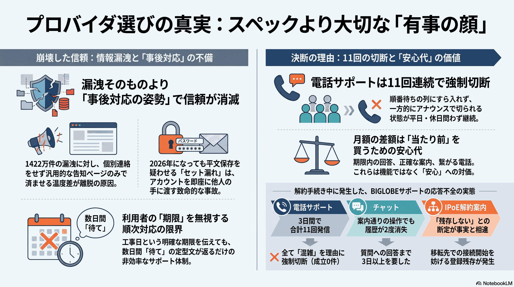
AI ラジオ解説（15 分）
この記事のテーマ
前々編は情報漏洩を踏んで退会を決めた話、前編はサポート窓口が3日返事をよこさなかった話。今回は「回答は来た、ただし内容が実際の状態と合っていなかった」段階の記録です。共通するのは、利用者側の期限と、事業者側の処理の間に橋が渡っていない、ということ。
物語線と、実際に見えたもの（12枚の図で辿る）
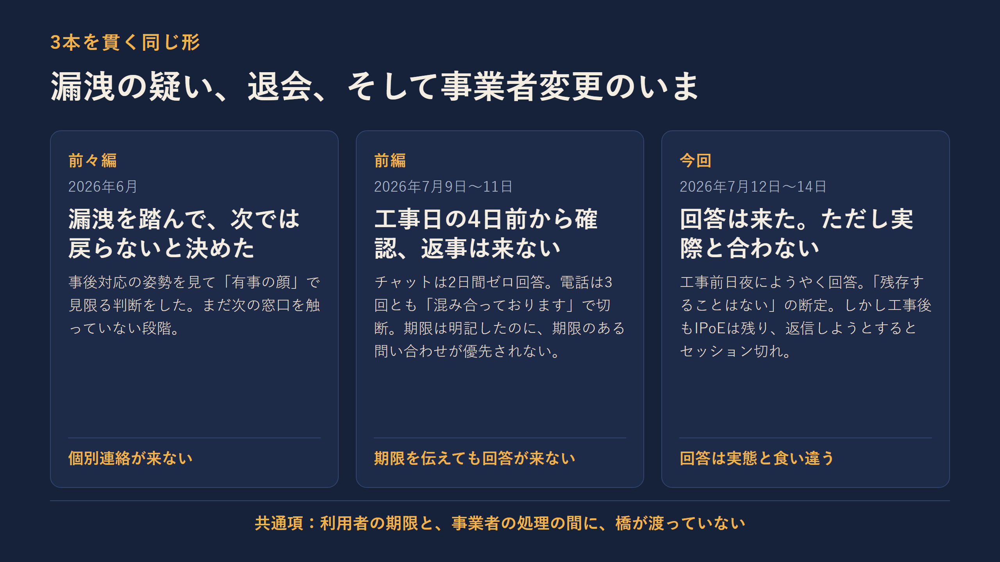
3本を貫く同じ形。「期限のある問い合わせが期限どおりに処理されない」
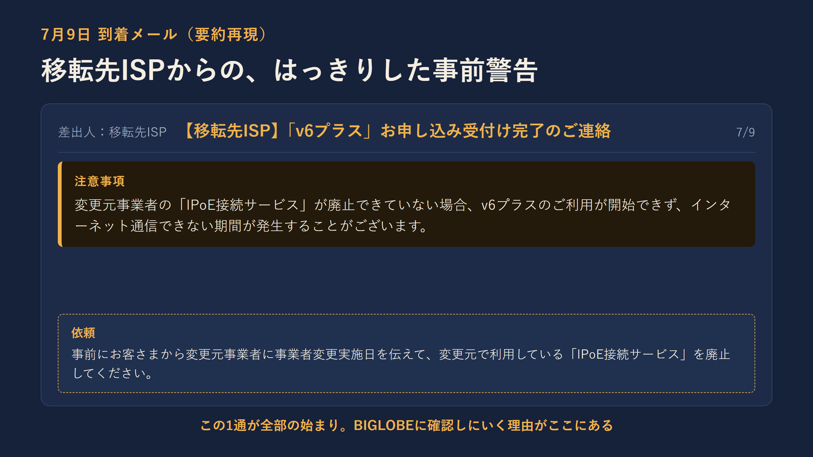
移転先ISP からの、はっきりした事前警告。この1通が全部の始まり
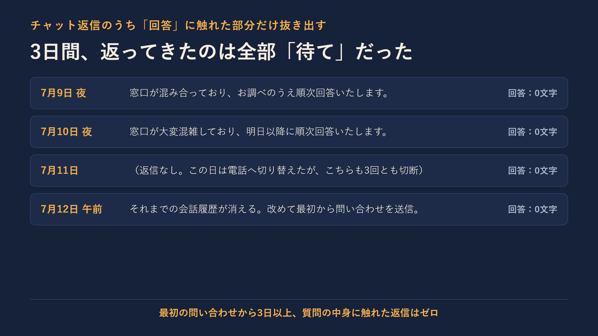
3日間、返ってきたのは全部「待て」だけ。回答は0文字
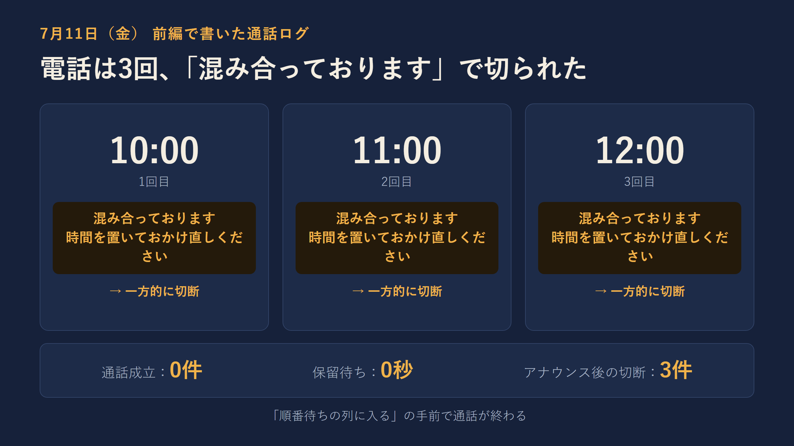
7月11日、電話3連敗。順番待ちの列に入る手前で終わる
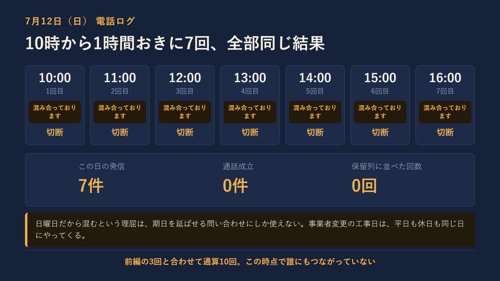
7月12日、電話7連敗。10時から1時間おきに、全部同じ結果
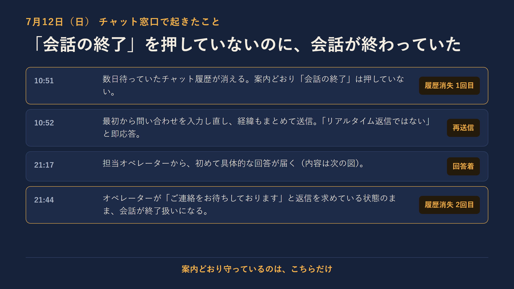
案内どおり「会話の終了」を押していないのに、会話が2度終わっていた
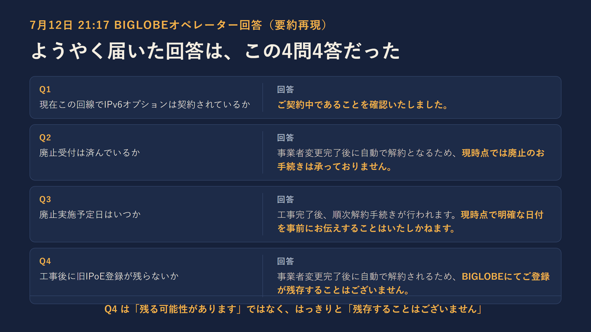
Q4 の答えは「残る可能性があります」ではなく「残存することはございません」の断定
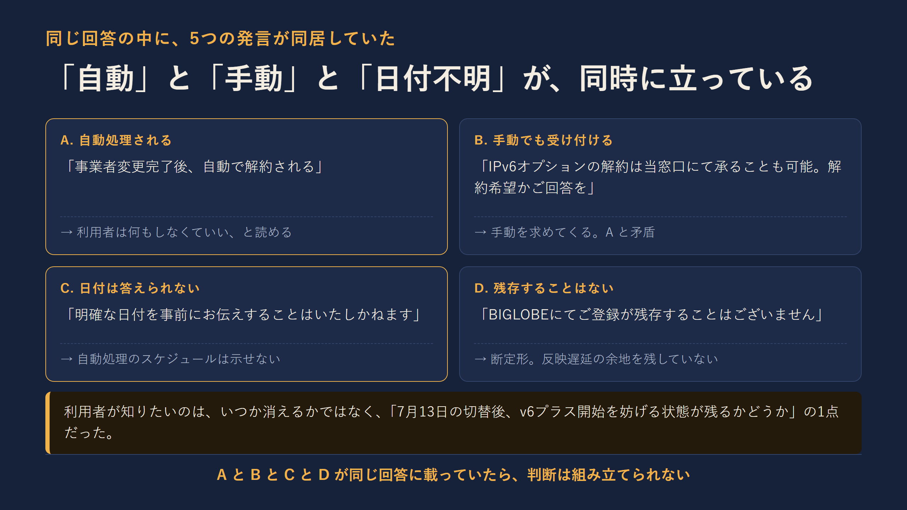
「自動」「手動」「日付不明」「残存しない」が、同じ回答に同居する
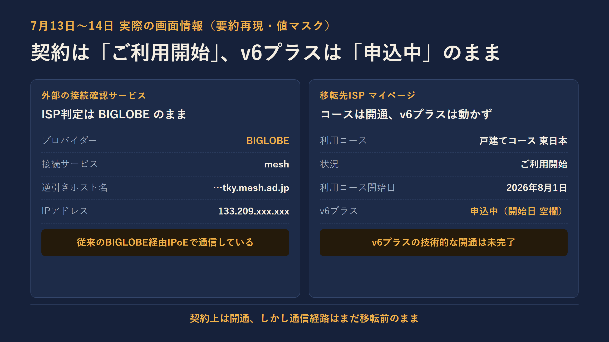
契約上は開通、しかし通信経路はまだ移転前のまま
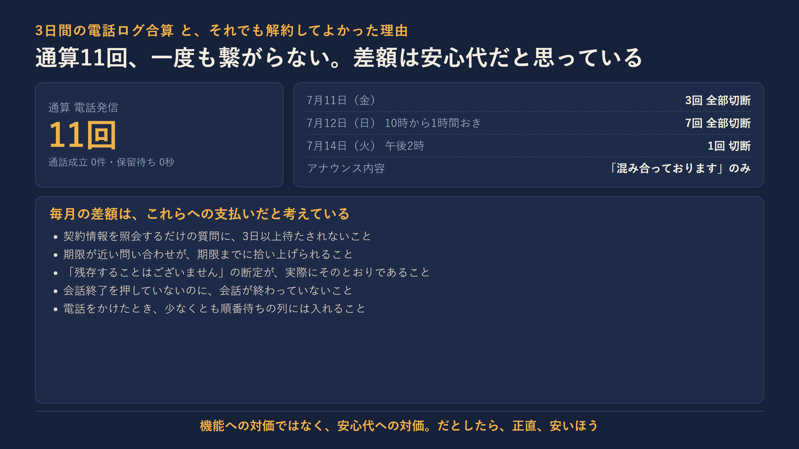
通算11回、一度も繋がらない。差額は安心代として払っている
関連リンク